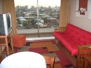
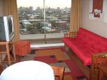

Quienes somos
El objetivo general de la Fundación es contribuir con el tratamiento integral de los niños con cáncer y leucemia del país (Plan AUGE y GES), ayudando a su desarrollo integral, mejorando su calidad de vida y fortaleciendo su integración social y familiar. En el año 1992 se creó la Fundación Oncológica Las Condes, atendiendo a niños y adultos con cáncer. En el año 2000 se modifican sus estatutos según el decreto N° 994 publicado en el Diario Oficial N° 36817, para atender solamente a niños con cáncer.
Misión
Brindar apoyo a los niños y niñas de escasos recursos diagnosticados con cáncer y a sus familias, a través de los diferentes programas con el fin de mejorar su bienestar y calidad de vida durante el tratamiento médico que reciben .
Visión
Ser en el año 2018 una Fundación de grandes alcances y sostenible en el tiempo, que ofrezca ayuda integral a los niños y niñas enfermos con cáncer y a sus familias, desde el diagnóstico de la enfermedad y durante el tratamiento de ésta.


Nuestros Objetivos
La Fundación Niño y Cáncer es una entidad sin fines de lucro que nació para ser un importante apoyo en el tratamiento integral de los niños con cáncer o leucemia atendidos en el Sistema Público del país (Plan AUGE y GES) mejorando su calidad de vida y fortaleciendo su integración social y familiar.


 

Sus principales objetivos son:
- Apoyar el tratamiento de la enfermedad
- Generamos espacios de recreación y mejoramos la calidad de vida del niño durante y después de su tratamiento
- Rehabilitamos al niño tratado y posteriormente lo integramos a la sociedad (Becas de Estudios)
- Damos apoyo social y solidario a la familia del niño (Departamentos de Acogida, almuerzo para padres de niños hospitalizados, Cenas de Navidad, etc.)
Necesitamos la colaboración solidaria de la comunidad, para lograr transformar la cara triste de la enfermedad en una cara feliz con esperanzas para estos pequeños que luchan día a día por su vida.
-
Directiva
- Dr. Juan A. Quintana B. / Presidente
- Sr. Fernando Manns O. / Tesorero
- Dra. Victoria Beresi / Secretaria